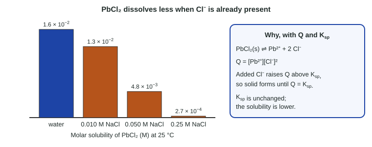

Topic 7.11 calculated how much of a slightly soluble salt dissolves in pure water. Real water is rarely pure: seawater, blood and lab solutions already contain ions. If the solution already holds one of the ions the salt releases, the salt dissolves less. This is the common-ion effect, and it is Le Châtelier's principle (topic 7.9) applied to a solubility equilibrium.
Why a common ion lowers solubility

Take a saturated solution of lead(II) chloride: PbCl2(s) ⇌ Pb2+(aq) + 2 Cl−(aq), with Q = Ksp. Now dissolve some NaCl, which supplies Cl−, a common ion.
- Q vs Ksp: [Cl−] goes up, so Q = [Pb2+][Cl−]2 rises above Ksp. The net reaction runs in reverse: PbCl2 precipitates until Q = Ksp again.
- Particles: more Cl− ions in solution meet Pb2+ ions at the surface of the solid more often, so ions rejoin the crystal faster. The dissolving and precipitation rates balance with less salt dissolved.
- Ksp does not change. Only temperature changes it. What changes is the solubility: how much of the salt dissolves.
Only an ion that appears in the solubility equilibrium counts. KNO3 does nothing to PbCl2; NaCl or Pb(NO3)2 both lower its solubility.
Calculating solubility with a common ion
The shared ion's concentration is (common ion) + (amount from the dissolving salt). Because the salt is only slightly soluble, and even less so now, the second term is usually tiny and can be dropped, exactly like the small-x approximation of topic 7.7.
Worked example. Ksp of PbCl2 is 1.7 × 10−5 at 25 °C. Find its molar solubility in 0.25 M NaCl.
1. Dissolving equation: PbCl2(s) ⇌ Pb2+ + 2 Cl−.
| [Pb2+] (M) | [Cl−] (M) | |
|---|---|---|
| Initial | 0 | 0.25 (from NaCl) |
| Change | +s | +2s |
| Equilibrium | s | 0.25 + 2s ≈ 0.25 |
2. Ksp = s(0.25 + 2s)2 ≈ s(0.25)2 = 0.0625 s.
3. s = 1.7 × 10−5 / 0.0625 = 2.7 × 10−4 M.
4. Check: 2s = 5.4 × 10−4 M, which is 0.2% of 0.25 M. Well under 5%, so the approximation holds. (Because [Cl−] is squared, the error in s is about twice that percentage, so a small check value matters here.)
Compare with pure water: 4s3 = 1.7 × 10−5 gives s = 1.6 × 10−2 M. The NaCl cut the solubility by a factor of about 60.
Worked example. Ksp of Ag2CrO4 is 1.1 × 10−12. Find its molar solubility in 0.050 M AgNO3.
1. [Ag+] = 0.050 + 2s ≈ 0.050 M; [CrO42−] = s.
2. Ksp = [Ag+]2[CrO42−] ≈ (0.050)2s = 0.0025 s.
3. s = 1.1 × 10−12 / 0.0025 = 4.4 × 10−10 M. Note: the 0.050 M is squared because Ag+ has the coefficient 2, but it is not doubled; it is the actual concentration of Ag+ from AgNO3.
Two more slips to watch: count the ions the soluble salt supplies (0.020 M CaCl2 gives 0.040 M Cl−), and check the approximation. In 0.010 M NaCl, the approximation for PbCl2 gives s = 0.17 M, larger than in pure water, which is impossible; 2s is far more than 5% of 0.010 M, so the full expression is needed there.
Where it matters
Chemists use the common-ion effect to make sure a precipitate forms completely, for example adding extra sulfate so that nearly every Ba2+ ion leaves solution as BaSO4 in a gravimetric analysis (topic 4.6). It is also why the solubility of a salt quoted in a table, measured in pure water, can be far too high for a real solution.